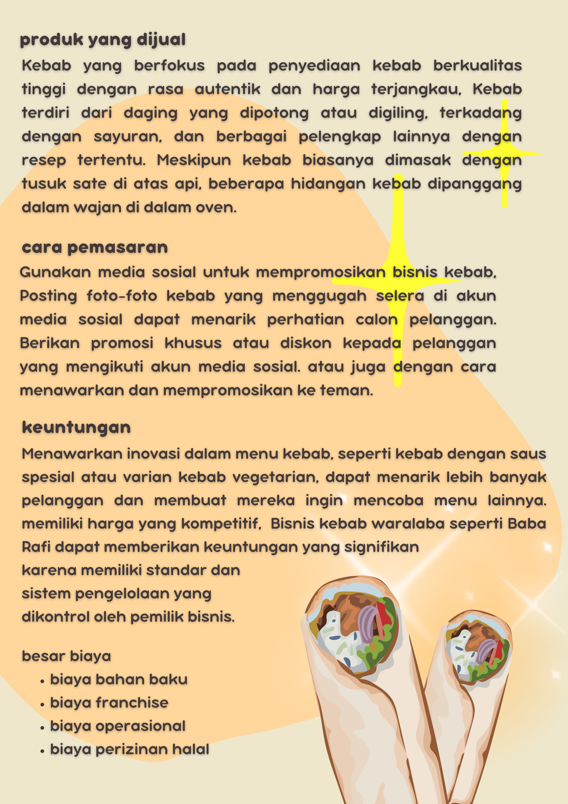

Cesy Preziosi Azzahra
Tentang Saya
Halo! Nama saya Cesy Preziosi azzahra. Saya berasal dari Kota Batam, Kepualauan Riau dan saat ini saya bersekolah di SMA Al Azhar Syifa Budi Solo. Saya memiliki minat yang besar dalam bidang memasak atau membuat kue, karna saya senang belajar hal-hal baru. Selain itu, saya juga aktif dalam meraih bidang akademik.
Proyek
Bisnis Kebab
Sedang mencari ide usaha camilan atau makanan yang praktis tapi tetap bikin kenyang? Yuk, coba simak ini ! Franchise kebab kami di buat dari bahan-bahan segar berkualitas, kebab kami hadir dengan isian yang melimpah, mulai dari daging sapi atau ayam premium, sayuran segar, saus spesial racikan kami, hingga balutan tortilla yang lembut dan gurih. Setiap gigitan dijamin bikin kamu ketagihan !
Apa Itu QWERTY ?
QWERTY adalah tata letak keyboard yang paling umum digunakan di dunia, dinamai berdasarkan urutan enam huruf pertama di baris atas keyboard: Q, W, E, R, T, dan Y. Desain ini pertama kali dikembangkan oleh Christopher Latham Sholes pada tahun 1870 untuk mesin ketik dan mulai digunakan secara luas pada mesin ketik buatan Remington yang dipasarkan pada tahun 1874.
.png)
Kontak
Email: cesy.7@smaasbsolo.sch.id
Telepon: 08123456789